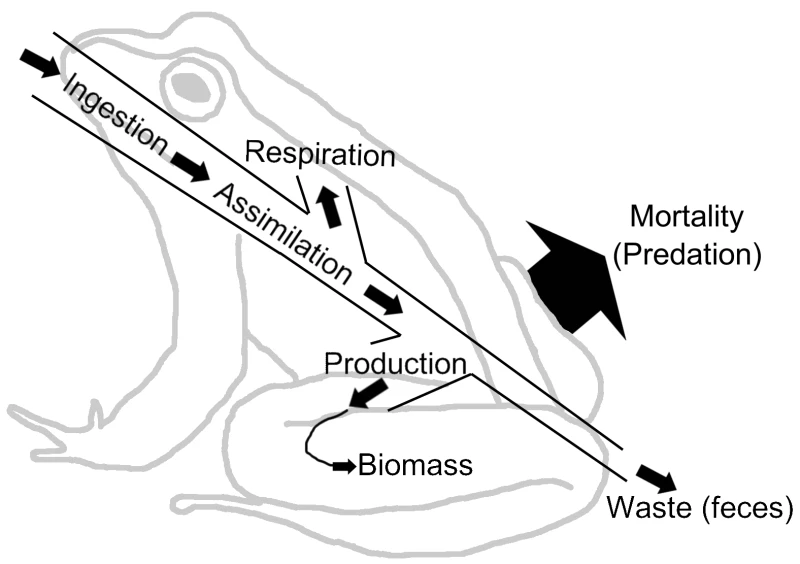
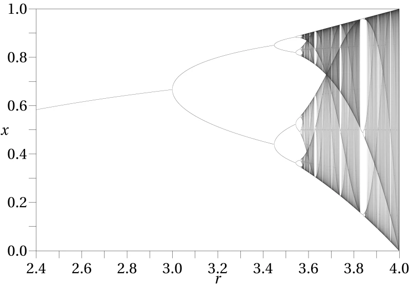
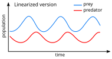

I wanted to build a petri dish you could watch. Drop some creatures into a space with limited food and see what happens. They eat, they grow, they reproduce, they die. The population fluctuates. Sometimes it booms. Sometimes it crashes. You can intervene by dropping food wherever you click, or you can just sit back and let the ecosystem run.
The dynamics that emerge resemble the classical Lotka-Volterra equations used to model predator-prey systems. In the standard two-species formulation, the prey population \(x\) and predator population \(y\) evolve as:
\[\frac{dx}{dt} = \alpha x - \beta xy, \qquad \frac{dy}{dt} = \delta xy - \gamma y\]Creature Garden doesn't have explicit predators, but the food supply plays an analogous role. Creatures compete for a shared resource that regenerates at a constant rate, so the effective interaction is creature-vs-scarcity rather than predator-vs-prey. The population oscillations you see in the simulation—boom, overshoot, crash, recovery—are a hallmark of these coupled differential equations.

{kind=link}
Procedural creatures
Each creature is generated with random traits: a body color chosen from the full hue spectrum, a size somewhere between 6 and 25 pixels in diameter, and between six and nine tentacles. The tentacles aren't decorative. They animate with a sinusoidal undulation that gives each creature a distinct swimming motion. Two white eyes with black pupils sit on the body, and together with the tentacles they make each creature look vaguely like a cartoon octopus or a deep-sea microorganism.
Creature size isn't fixed. When a creature eats food, it grows. Bigger creatures are easier to see and cover more ground, but they also burn through their energy faster. A creature that gorges itself and grows large has to keep eating at a higher rate or it'll starve. There's a natural tension between growth and sustainability that emerges from the simulation rules without being explicitly programmed.
The energy budget for each creature follows a simple balance equation. If \(E\) is a creature's stored energy, \(r\) is the radius, and \(f(t)\) represents food intake at time \(t\), then the per-frame energy update is:
\[E_{t+1} = E_t + f(t) - c \cdot r^2\]The metabolic cost scales with \(r^2\) (proportional to body area), so a creature twice as wide burns energy four times faster. This square-law penalty is what keeps unchecked growth in check: past a critical size, intake can't keep up with expenditure and the creature starves.
Behavior
Creatures have a few simple drives. They're attracted to nearby food. They repel from each other at close range. And they flee from the mouse cursor within a 100-pixel radius. The movement model uses velocity physics with acceleration toward goals and deceleration from drag, so creatures don't teleport around. They drift, turn, speed up when they spot food, and scatter when the cursor gets too close.
The net force on each creature is a superposition of these drives. If \(\mathbf{p}_i\) is the position of creature \(i\), \(\mathbf{p}_f\) the nearest food, and \(\mathbf{p}_m\) the mouse cursor, the acceleration vector at each frame is roughly:
\[\mathbf{a}_i = \underbrace{k_f \frac{\mathbf{p}_f - \mathbf{p}_i}{\|\mathbf{p}_f - \mathbf{p}_i\|}}_{\text{food attraction}} - \underbrace{\sum_{j \neq i} k_r \frac{\mathbf{p}_i - \mathbf{p}_j}{\|\mathbf{p}_i - \mathbf{p}_j\|^2}}_{\text{peer repulsion}} - \underbrace{k_m \frac{\mathbf{p}_i - \mathbf{p}_m}{\|\mathbf{p}_i - \mathbf{p}_m\|}}_{\text{cursor flee}}\]Velocity updates with \(\mathbf{v}_{t+1} = d\,\mathbf{v}_t + \mathbf{a}_i\), where \(d < 1\) is a drag coefficient that bleeds off speed each frame and prevents infinite acceleration.
Food spawns randomly across the canvas and persists for 300 frames before disappearing. If a creature reaches a food item before it despawns, the creature eats it and regains energy. If not, the food vanishes and that's a missed opportunity for the population. The spawn rate is constant, which means the food supply acts as a carrying capacity. Too many creatures and they start competing for insufficient resources. Too few and food piles up uneaten.
This resource-limited growth follows the logistic model. If \(N\) is the population and \(K\) is the carrying capacity set by the food spawn rate, the population trend approximates:
\[\frac{dN}{dt} = rN\left(1 - \frac{N}{K}\right)\]When \(N \ll K\), growth is roughly exponential at rate \(r\). As \(N \to K\), the effective growth rate drops to zero. When \(N > K\), the term \((1 - N/K)\) goes negative and the population contracts—creatures starve faster than they reproduce. The constant food spawn rate means \(K\) is fixed unless you intervene by clicking to add extra food, which temporarily raises the effective carrying capacity.

{kind=link}

{kind=link}
Reproduction and death
Reproduction is stochastic. Each frame, every living creature has a 1% chance of spawning a new creature nearby. The offspring inherits randomized traits rather than copying its parent exactly, so the population stays visually diverse over time. There's no explicit selection pressure based on traits, but creatures that happen to be in food-rich areas survive longer and get more chances to reproduce, which creates a loose spatial selection dynamic.
With a per-frame reproduction probability \(p = 0.01\), a creature that survives \(n\) frames has an expected offspring count of \(pn\). The probability that it reproduces at least once during its lifetime is \(1 - (1 - p)^n\). A creature surviving 200 frames has about an 87% chance of reproducing at least once; one that dies after 50 frames only has a 39% chance. Longevity is the dominant factor in reproductive fitness, and longevity depends on food access—so spatial luck and efficient foraging are indirectly selected for.
Every creature has a hunger meter and a lifespan. Hunger increases each frame and resets when the creature eats. If hunger exceeds a threshold, the creature dies. Even well-fed creatures eventually die of old age when their lifespan runs out. Death removes the creature from the simulation immediately. The population counter in the stats display reflects the current living count.
The mortality rate \(\mu\) has two independent components—starvation and aging—so the survival probability after \(n\) frames is:
\[S(n) = \underbrace{\prod_{t=1}^{n} \mathbf{1}[h_t < h_{\max}]}_{\text{starvation survival}} \cdot \underbrace{\mathbf{1}[n < L]}_{\text{age survival}}\]where \(h_t\) is the hunger level at frame \(t\), \(h_{\max}\) is the starvation threshold, and \(L\) is the creature's maximum lifespan. A creature dies the instant either condition fails. The two clocks are independent: a well-fed creature still dies at frame \(L\), and a starving creature dies long before it reaches old age.
The sandbox
Clicking or tapping anywhere on the canvas drops food at that location. This is the main interaction. You can feed a struggling population, lure creatures to one corner of the screen, or create a trail of food and watch them follow it. The cursor glow (a blue radial gradient that follows your mouse) hints at your presence without being intrusive.
The stats bar tracks score, creature count, and food count in real time. The visual style is dark, with a deep blue-green gradient background that suggests water. The creatures' bright random colors pop against it. The whole thing runs on a single Canvas 2D rendering loop in a single HTML file.